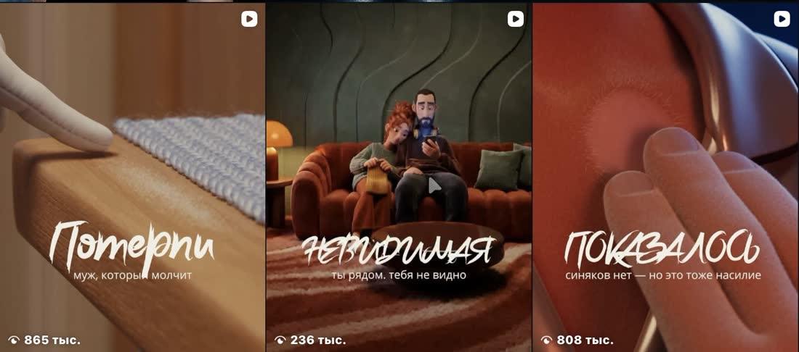

AI-мультфильмы
как это устроено
2 463 784 просмотра за 30 дней. Один аккаунт, ноль рублей на рекламу. Всё нарисовано и снято нейросетями — без камеры, без актёров, без студии. Ниже — из чего это собирается, почему люди досматривают до конца и где обычно всё ломается.

Почему их досматривают
Охват в рилсах считается по досмотрам. Алгоритм не знает, красивый у вас кадр или нет, — он видит, что человек не смахнул. Досмотр делают три вещи, и они разные.


Из чего собирается ролик
Четыре шага. Почти все провалы — это когда начинают с третьего.

Где ломаются девять из десяти
Это три самые частые точки, на которых люди бросают. Проверьте себя — скорее всего, вы уже на одной из них.
Чек-лист
Отметьте то, что у вас уже есть. Пустые галочки — это и есть повестка вашего разбора.

Всё, что выше, — это карта. Дальше нужен человек, который посмотрит на вашу конкретную ситуацию и скажет, где вы стоите. Это живой созвон один на один, примерно 45 минут.
- Разберём, где вы сейчас и чего не хватает конкретно вам
- Покажу вживую, как собирается ролик — не слайды, а экран
- Сгенерируем кадр с вашим героем прямо на созвоне
- Соберу маршрут на шесть недель и пришлю текстом — он ваш в любом случае
- Честно отвечу на любой вопрос про то, как это устроено изнутри
Записаться на разбор
Семь вопросов в анкете — по ним я пойму, что именно вам показывать, чтобы не тратить ваши 45 минут на общие слова.
Заполнить анкету → Бесплатно · созвон 45 минут · места ограничены